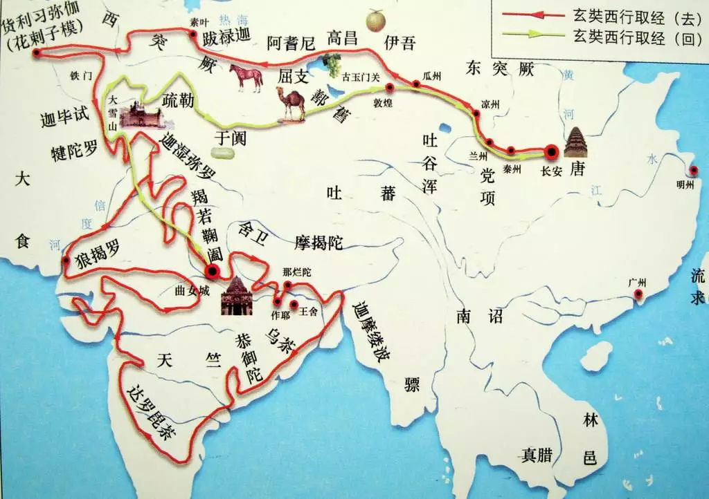
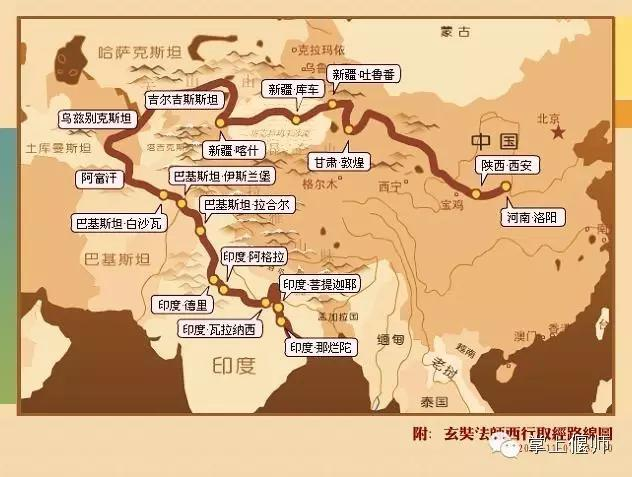

太宗贞观元年（627年），玄奘从长安出发，开始了他的西行。贞观十七年（643年）春，玄奘携带657部佛经，取道今巴基斯坦北上，经阿富汗，翻越帕米尔高原，沿塔里木盆地南线回国，两年后回到首都长安。玄奘此行，行程5万里，历时18年。于贞观十九年（645年）回到长安。时年46岁。
长安(今陕西西安)——秦州(今甘肃天水)——兰州——凉州(今甘肃武威)——瓜州(今甘肃安西县东南)——玉门关——伊吾(今新疆哈密)——高昌(今新疆吐鲁番)——阿耆尼国(今新疆焉耆)——屈支国(今新疆库车)——跋逯迦国(今新疆阿克苏)——凌山(今天山穆苏尔岭)——大清池(今吉尔吉斯斯坦伊塞克湖)——素叶城(即碎叶城，今吉尔吉斯斯坦托克马克西南)——昭武九姓七国(都在今乌兹别克斯坦境内)——铁门(乌兹别克斯坦南部兹嘎拉山口)——今阿富汗北境——大雪山(今兴都库什山)——今阿富汗贝格拉姆——巴基斯坦白沙瓦城——印度。
从今巴基斯坦北上——阿富汗——葱岭(帕米尔高原)——大流沙(塔克拉玛干沙漠)——敦煌——瓜州(今甘肃安西县东南)——长安；

中国——吉尔吉斯——乌兹别克－－哈萨克－－塔吉克——阿富汗——巴基斯坦——印度——尼泊尔
